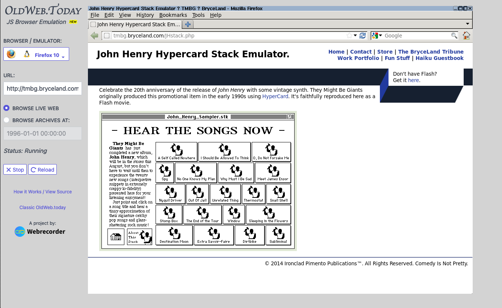

Emulation for Archivists
Exercises with OldWeb.Today
To demonstrate the possibilities of browser-based emulators, we will turn to a few exercises using Webrecorder's OldWeb.Today emulation site. This project provides access to multiple emulation environments to emulate past browsers and explore archived websites.
December 31, 2020 marked the official end of life for Adobe's support of Flash on the web, once a popular way to create interactive and dynamic content. Although most websites online have migrated from Flash content, viewing archived websites from the WayBack Machine, as well as any outdated websites online still using Flash, requires emulating the Flash plugin no longer available in modern browsers. Many of the emulated browsers on OldWeb.Today contain different versions of Flash.

Exercise #1: The John Henry Hypercard Stack Emulator
Let's start with a current website with elements that require Flash. The John Henry Hypercard Stack Emulator(opens in a new tab) seeks to emulate a promotional item that accompanied the release of the band They Might Be Giants' album John Henry in 1994. This item was created in the same Hypercard program as Bomb Iraq and can no longer run on modern computers.
Unfortunately, the emulation created in 2014 is dependent on Flash plugins and will no longer display on 2021 browsers. Take a moment now to visit the page(opens in a new tab), and you will see a blank space where the Hypercard stack should be.
Tip: This example uses a previous form of emulation that has itself become outdated. As technology progresses, you may find yourself needing to "emulate the emulator," so to speak.
With OldWeb.Today, we can emulate the Flash plugin and have fun with They Might Be Giants once more.
Open OldWeb.Today(opens in a new tab) in a new window of the browser of your choice. This module was written in Firefox 86.0.
Paste the following URL of the John Henry Hypercard Stack Emulator in the URL box.
http://tmbg.bryceland.com/JHstack.phpClick the button next to "Browse Live Web."
Click "Select a Browser" and choose "Firefox 10" (with Flash 32). Clicking this should launch the emulator.
Wait for emulator to load (this may take several minutes). For best results, stay on this page until the emulation has fully loaded.
NOTE: This may cause your computer to heat up and make loud fan noises. Remember that JavaScript emulators in-browser require additional computing power that is pushed to the user's device: your computer.
Once fully loaded, the John Henry Hypercard stack should be visible. Click in the emulator to control the mouse, and click on an icon to enjoy some "signature catchy pop songs"! (Make sure your computer sound is turned up.)
Exercise #2: Archived Websites with Flash
Our next exercise will involve accessing an archived website with Flash elements. In the early 2000s, as Flash-based web design gained increasing popularity, full Flash websites became common for promotional tie-ins to video games, TV shows, movies, and other media. As Flash support has ended and promotion become no longer necessary for certain titles, these websites mostly disappeared.
Upon the release of the 2001 movie Shrek, DreamWorks created an interactive website with behind-the-scenes material, trailers, music, games, and more. Twenty years later, this website has disappeared. Try going to shrek.com/intro.html(opens in a new tab) now, and you should be redirected to the current, non-Flash website.
The Internet Archive's WayBack Machine has collected a version of the original Flash website from 2001, but the infrastructure doesn't support emulating Flash. Take a moment now to look at the archived page(opens in a new tab), and you should see a blank screen. However, using OldWeb.Today we can once again recreate the interactive 2001 experience.
Open OldWeb.Today(opens in a new tab) in a new window of the browser of your choice. This module was written in Firefox 86.0.
Paste the following URL of WayBack Machine's archived Shrek website in the URL box.
https://web.archive.org/web/20010428014151/http://www.shrek.com/intro.htmlClick the button next to "Browse Live Web."
Click "Select a Browser" and choose a browser (with Flash). Consider experimenting with older Flash versions instead of jumping to the most recent one we used in the previous exercise.
Wait for emulator to load (this may take several minutes). For best results, stay on this page until the emulation has fully loaded.
NOTE: This may cause your computer to heat up and make loud fan noises. Remember that JavaScript emulators in-browser require additional computing power that is pushed to the user's device: your computer.
Once fully loaded, the Shrek should start playing. This website is more resource-intensive than the John Henry Hypercard stack. How does this affect the experience of emulation? Do you think this reproduces the "look and feel" of using the website in 2001?